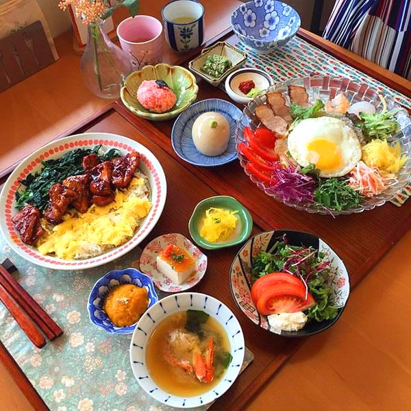

김혁인의 먹자골목입니다.
일식(日食)은 좁은 의미로 일본 고유의 요리법을 사용한 일본 고유의 요리들을 지칭한다.
일본인이 오랫동안 먹어온 식사이더라도, 그것이 일본의 독특한 요리가 아니라면,
"와쇼쿠(화식)"로 불리지 않는다.[1] 일본 요리와 "일본이 먹어온 식사"가 반드시 일치하는 것은 아니다.
일본 요리는 수많은 정치적, 사회적 변화를 겪으며 여러 세기에 걸쳐 발전해왔다.
일본 요리는 쇼군 치하 동안에 엘리트주의를 없애려 했던 중세 시대가 출현하며 변화하였다.
초기 현대 시대에 서양 문화가 일본에 전래하면서 엄청난 변화를 겪게 된다.